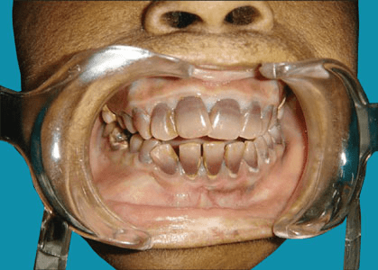
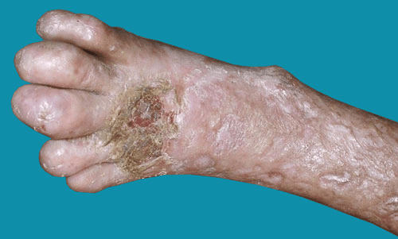

What is Congenital Erythropoietic Porphyria?
Gunther's Disease is an extremely rare, congenital variation of Porphyria. Porphyria diseases are manifested in the body's inability
to generate the chemical heme, a substance found in the bone marrow, red blood cells and liver. In Gunther's Disease the lack of
heme allows other naturally occuring chemicals, called porphyrins, to build up to toxic levels in the body.
The physical manifestations of Gunther's Disease include extreme sensitivity to sunlight (blistering and scarring) as well as
increased hair growth on the forhead and face. The chemical changes in the body can also cause the teeth to turn red and glow,
and the urine to take on a pinkish hue. Bacteria can form in the affected areas causing infection which can require amputation
of fingers, noses, etc.
People with Gunther's Disease must avoid the sunlight and restrict their diets to avoid chemicals which might trigger porphyria
attacks. In some cases of porphyria, regular bloodletting can help to reduce the level of Porphyrins in the blood, and provide
symptom relief. There is no cure for the disease.
Gunther's Disease typically manifests in infants, but there have been cases of rapid adult onset. Despite the lack of a cure or
effective treatment, most people with Gunther's Disease live to be between 40 and 60 years old.
Gunther's Disease is sometimes known as "Vampire Disease" because its symptoms so closely mimic the mythological symptoms
associated with vampires.

The porphyrias are a group of diseases caused by abnormalities in the production by the body of chemicals called porphyrins.
Porphyrins are very important as they form haemoglobin that carries oxygen around the body in the red blood cells. The production
of haemoglobin involves a chain of reactions in which one porphyrin is converted to another, and the porphyrias are diseases that
result from genetic abnormalities in this process. If there is a block in the chain of reactions, there will be a build-up in the
body of a particular porphyrin (which depends on where the block occurs), and porphyrins in high concentration are damaging to tissues.
The problems caused by the different porphyrias relate to the particular porphyrin that accumulates.

Congenital erythropoietic porphyria (CEP), also called Günther’s disease after the doctor who first described it, is the rarest
of the porphyrias. It is estimated that about 1 in every 2 – 3 million people are affected by CEP, which affects males and
females equally, and occurs in all ethnic groups.
In CEP, there are high levels of a porphyrin called porphyrinogen in the bone marrow, blood and urine, which cause the symptoms and signs.
Yes. The parents of someone with CEP have no symptoms of the condition themselves (and are called carriers of the condition),
but each of them has a mutation in one of their genes. There is a 1 in 4 risk that each child born to 2 carriers will inherit
the abnormal gene from both parents and thus develop the condition. This form of inheritance is called autosomal recessive.
Individuals with CEP may not have all of the problems described in this leaflet as the severity of the condition varies.
Usually, the disease shows itself soon after birth or in early childhood, but sometimes onset of disease is delayed until
the teenage years or early adulthood.
- Red urine is usually the first sign noticed in newborn babies with CEP. The intensity of the redness can vary from day to day.
- The skin is very sensitive to light, especially direct sunlight, which may cause blisters or ulcers, which heal to leave scars.
This most commonly happens at sun-exposed sites, for example the backs of the hands, the face, ears and scalp.
- The eyes may also be sensitive to bright sunlight or artificial light, which can cause ulcers and scarring. With time,
some patients lose their eyelashes, making their eyes easily irritated by small particles of dust and fibre.
- The skin may take longer to heal after injury or blistering, and become infected.
- Anaemia, which varies in severity, is common in CEP. Anaemia develops because porphyrin damages red blood cells,
and causes tiredness, shortness of breath following minimal exertion, and paleness.
- The spleen, which removes the damaged red blood cells, can gradually become bigger and cause worsening of the anaemia and a reduction
in the number of platelets (the blood cells that help to form blood clots to stop bleeding) and white cells (the blood cells that
fight infections) in the blood. This can lead to an increased risk of bleeding (such as repeated nose bleeds) and infections.
CEP can occasionally cause thinning of the bones (osteoporosis), which can lead to bone fractures following minor injury.
- Repeated blisters and ulcers can cause extensive scarring in sun-exposed skin and permanent bald patches on the scalp.
- Some individuals may develop darkening of sun-exposed skin.
- Excess body hair may develop, especially on the face and backs of the hands.
CEP may be suspected in children (or rarely adults) who present with the problems described in this leaflet.
The diagnosis is confirmed by measuring porphyrin levels in the blood, urine and faeces. These samples need to be
protected from light until tested. A blood sample may also be taken to look for changes in the genes.
Testing for CEP in pregnancy is not offered routinely. However, CEP can be diagnosed in pregnancy in families where there is already a
child with CEP. In this situation, cells taken from the fluid surrounding the baby in the womb (amniocentesis) or from the placenta,
at 3 to 4 months into the pregnancy, are checked for the gene mutations causing CEP.
Currently, the only available cure for CEP is a bone marrow transplant (BMT). This involves transplanting healthy bone marrow from another person (the donor)
to the person with CEP (the recipient). Following successful BMT, the symptoms of CEP such as photosensitivity and anaemia will improve. However,
the scarring from previous damage to the skin is permanent.
For BMT to succeed, the bone marrow of the donor needs to be a good match with the recipient. BMT is a high-risk procedure, and is currently
reserved for those severely-affected individuals who also have a bone marrow donor who is a close match.
Research is underway to cure CEP with gene therapy. This would involve correcting the abnormal gene in the affected person. It is hoped that
this research will make good progress over the next decade.
Blood transfusions and perhaps removing the spleen may reduce porphyrin production by the bone marrow. Activated charcoal given
by mouth is sometimes effective. Bone Marrow Transplantation has been very effective in some patients. Stem cell transplantation
and gene therapy may also be an option in the future.